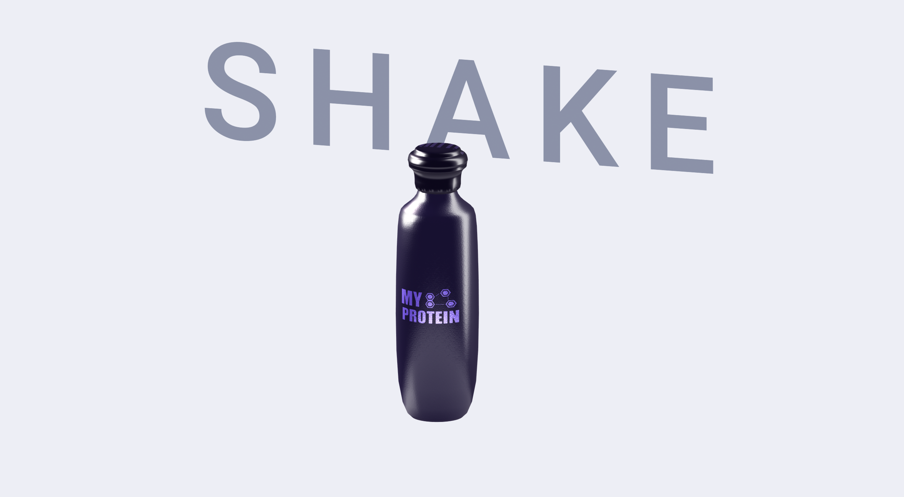

Bienvenue dans mon univers
Découvrez mes créations, mon parcours et mes compétences en modélisation 2D/3D.
Mon Parcours
Bac STI2D - 2025
Stage - 2024
Brevet - 2019
Mes Créations
 Projet 1: Scène d'un feu de camp
Projet 1: Scène d'un feu de campProjet 2: Visuel pour marque de protéine
Projet 3: Building à Brooklyn 2D
Technologies Maîtrisées
Blender
Maya
Photoshop
Unity 3D
Soft Skills
Créativité
Gestion de projet
Travail en équipe
Communication